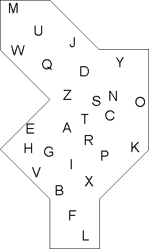

4.5: Hot Shots |
| |
Dorothy enters into an elegant dining room. She is amazed to find MIT's luminaries Noam Chomsky, Steven Pinker, Marvin Minsky, and the Scarecrow sipping coffee and debating all varieties of things. She tries to follow the discussions but there are all manners of conversation and she cannot decide which to focus on. Suddenly her eye is drawn to a huge engraving on the wall behind the milk and sugar table.
